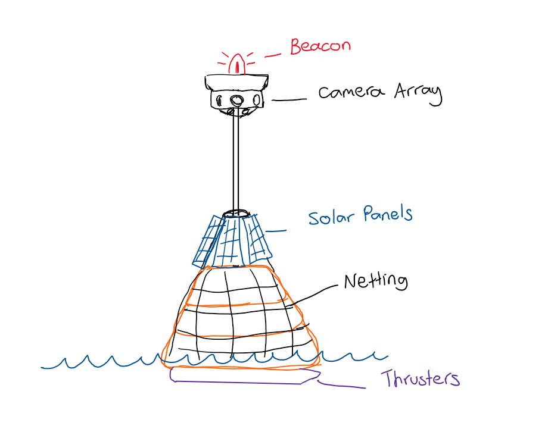
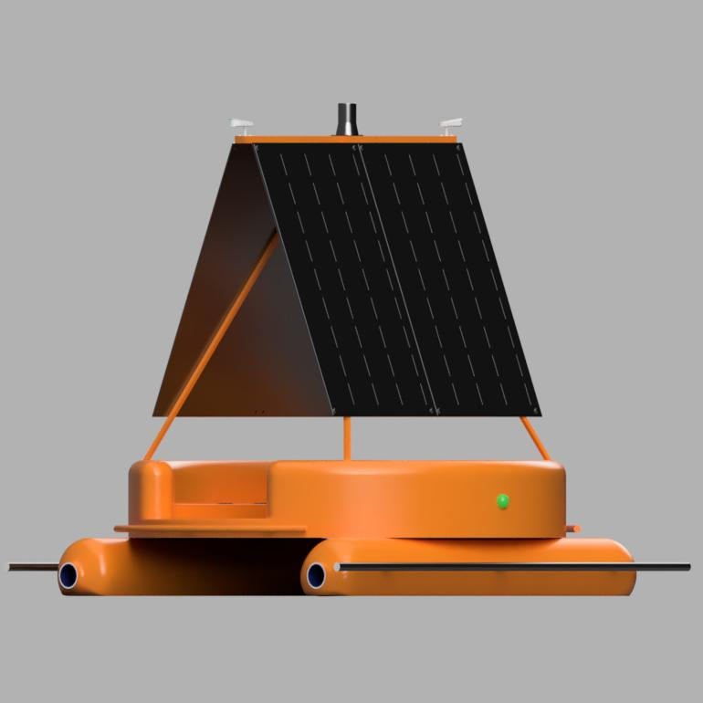
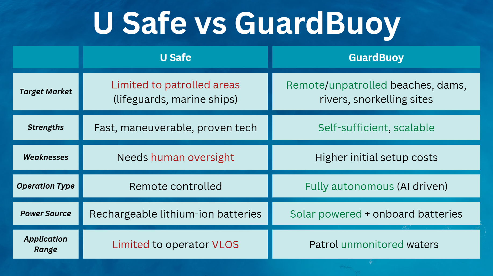
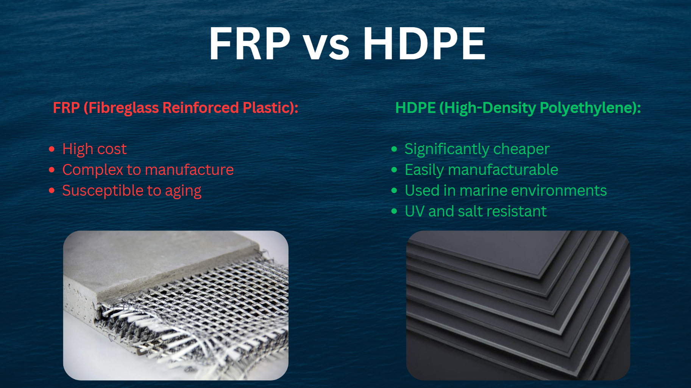

GuardBuoy is a conceptual autonomous water-rescue system designed to reduce drowning risk through rapid detection and response in aquatic environments. The system integrates computer vision-based detection, autonomous navigation, and solar-powered operation to enable deployment in both supervised and unsupervised waterways.
My contribution focused on materials selection, competitor benchmarking, and engineering justification to evaluate the technical feasibility and deployment viability of the concept.
The Problem
Drowning incidents remain a persistent safety challenge in coastal and inland environments, particularly where continuous lifeguard coverage is limited or impractical.
This project investigated whether an autonomous rescue platform could meaningfully reduce response time while remaining feasible in terms of cost, durability, and long-term marine operation.
My Role
- Competitor benchmarking of existing aquatic rescue and surveillance systems.
- Identification of capability gaps and design opportunities.
- Materials selection for marine-grade structural components.
- Assessment of corrosion resistance, durability, and manufacturability trade-offs.
- Development of engineering justification supporting design decisions.
- Contribution to technical report and investor-facing pitch.
Approach & Process

Concept Development
Early-stage system architecture was developed through concept sketches to define operational workflow, subsystem interaction, and overall rescue logic prior to CAD development.

Initial CAD
Preliminary CAD modelling in Fusion 360 was used to evaluate system layout, geometric feasibility, and subsystem integration prior to refinement.

System Visualisation
High-fidelity CAD renders were used to communicate design intent and support stakeholder evaluation of form, function, and feasibility.
Testing Operational Visualisation
Iterative Blender simulations were used to evaluate system behaviour, refine visual communication of operation, and support design validation during development.
Operational Visualisation
Final Blender animation representing the complete system workflow, illustrating intended autonomous detection and rescue sequence under conceptual operating conditions.

Competitor Benchmarking
Existing aquatic rescue and surveillance systems were benchmarked to identify functional limitations, performance gaps, and opportunities for differentiation in autonomous deployment.

Materials Selection
Candidate marine-grade materials were evaluated based on corrosion resistance, UV stability, impact tolerance, manufacturability, and lifecycle cost.
Key Engineering Decisions & Trade-offs
Results & Outcome
The project produced a structured engineering justification for the GuardBuoy concept, identifying viable materials and design directions for marine deployment.
The analysis contributed directly to both technical feasibility assessment and commercial framing of the concept, achieving 86% (pitch) and 88% (technical report).
What I Learned
This project strengthened my ability to translate engineering analysis into clear, defensible recommendations for both technical and non-technical stakeholders.
It also developed my ability to evaluate design decisions through both performance and commercial constraints, particularly in early-stage system development.